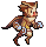

Hello there! My name is Antonio Sarcevic.
I was born in Wesel and I'm currently 21 years old. I live in Rees and drive to Kamp-Lintfort everyday for uni, which is about 50 km away from home.
I'm studying "Medien- und Kommunikationsinformatik", which could be translated as "media and communication computer science" at the Rhein-Waal University of Applied Sciences. It is basically a weird combination of creative and informatic based courses, but I like the mix since you learn a lot about computer science but also get the opportunity to work on your own ideas.
This is a Picture of me with a piece of toast in my mouth.